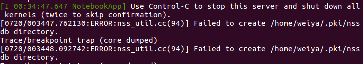
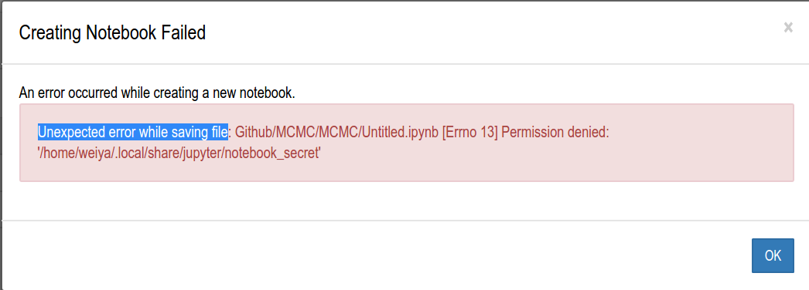
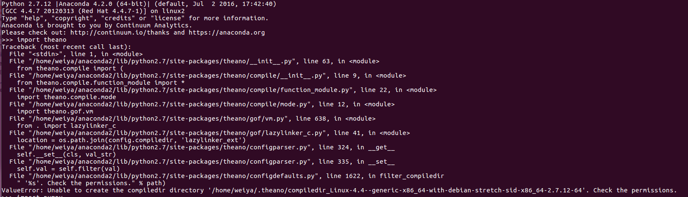

python 相关¶
使用ipython %matplotlib inline¶
参考cnblog
使用%matplotlib命令可以将matplotlib的图表直接嵌入到Notebook之中，或者使用指定的界面库显示图表，它有一个参数指定matplotlib图表的显示方式。inline表示将图表嵌入到Notebook中
seaborn的使用¶
Matplotlib自动化程度非常高，但是，掌握如何设置系统以便获得一个吸引人的图是相当困难的事。为了控制matplotlib图表的外观，Seaborn模块自带许多定制的主题和高级的接口。 segmentfault
远程访问jupyter¶
jupyter notebook 出错¶

可以通过
rm -r .pki
解决
创建jupyter notebook 权限问题¶

原因是所给的路径的用户权限不一致，jupyter的用户及用户组均为root，为解决这个问题，直接更改用户权限
sudo chown weiya jupyter/ -R sudo chgrp weiya jupyter/ -R
其中-R表示递归调用，使得文件夹中所有内容的用户权限都进行更改。
theano import出错¶

更改.theano文件夹的用户权限
python 查看已安装的包¶
pip list
conda更新spyder¶
(sudo proxychains) conda update spyder
selenium¶
refer to Selenium using Python - Geckodriver executable needs to be in PATH
array operation¶
>>> a = np.sum([[0, 1.0], [0, 5.0]], axis=1)
>>> c = np.sum([[0, 1.0], [0, 5.0]], axis=1, keepdims=True)
>>> a/c
array([[ 1. , 5. ],
[ 0.2, 1. ]])
>>> a
array([ 1., 5.])
>>> c
array([[ 1.],
[ 5.]])
>>> d
array([[ 1, 5],
[ 0, 10]])
>>> d/c
array([[ 1., 5.],
[ 0., 2.]])
>>> d/a
array([[ 1., 1.],
[ 0., 2.]])
Difference between numpy.array shape (R, 1) and (R,)¶
refer to Difference between numpy.array shape (R, 1) and (R,)
正式认识conda¶
参考https://conda.io/docs/user-guide/getting-started.html
为 py3 安装 spyder¶
- 先建一个conda环境bunny，安装python3.4，因为要支持pyside，而经试验3.5+不支持。
- 安装cmake
- pyside出现keyerrror
转向py3.6 不装pyside，而装pyqt5
pip install pyqt5
最终在新建的另一个 conda 环境 snakes 中装好了 Python3.6 及 spyder3，通过下面命令运行就 OK 了。
source activate snakes spyder3 &
xrange and range¶
安装sqlite3¶
windows下安装lxml¶
缺少Python27_d.lib¶
远程访问Jupyter Notebook¶
人工鱼群算法-python实现¶
请问phantom-proxy如何设置代理ip¶
python 编码介绍¶
爬虫必备requests¶
Python使用代理抓取网站图片（多线程）¶
python中threading模块详解¶
python 爬虫获取XiciDaili代理IP¶
使用SQLite¶
python urllib2详解及实例¶
使用Selenium¶
参考Python爬虫入门实战七：使用Selenium–以QQ空间为例
Python中将打印输出导向日志文件¶
python 中文编码¶
Python爬虫利器二之Beautiful Soup的用法¶
参考Python爬虫利器二之Beautiful Soup的用法
正则表达式之捕获组/非捕获组介绍¶
python pip 采用国内镜像¶
在win10下设置，参考Python pip 国内镜像大全及使用办法
在用户文件夹下新建pip文件夹，里面新建pip.ini文件
[global] index-url=http://mirrors.aliyun.com/pypi/simple/ [install] trusted-host=mirrors.aliyun.com
注意编码格式为utf8无BOM。
conda 在window下设置¶
win10下已经装了anaconda，spyder(2.7)，现想再装上python3，于是利用conda创建一个python3的环境bunny。
conda create --name bunny python=3
切换到bunny环境
activate bunny
pip install spyder3
又拍云的短信平台¶
参考文献
json与字符串¶
payload='{'name': weiya}' # payload='payload = {'name': weiya}'
换成json
json.loads(payload)
Warning
注意不能采用注释掉的部分。
unquote %7B character¶
参考transform-url-string-into-normal-string-in-python-20-to-space-etc
- python2
import urllib2 print urllib2.unquote("%CE%B1%CE%BB%20")
- python3
from urllib.parse import unquote print(unquote("%CE%B1%CE%BB%20"))
convert bytes to string¶
b"abcde".decode("utf-8")
json.dumps() 和json.dump()的区别¶
简言之，dumps()和loads()都是针对字符串而言的，而dump()和load()是针对文件而言的。具体细节可疑参见python json.dumps() json.dump()的区别 - wswang - 博客园
字符串前面添加u,r,b的含义¶
u/U:表示unicode字符串 不是仅仅是针对中文, 可以针对任何的字符串，代表是对字符串进行unicode编码。 一般英文字符在使用各种编码下, 基本都可以正常解析, 所以一般不带u；但是中文, 必须表明所需编码, 否则一旦编码转换就会出现乱码。 建议所有编码方式采用utf8
r/R:非转义的原始字符串 与普通字符相比，其他相对特殊的字符，其中可能包含转义字符，即那些，反斜杠加上对应字母，表示对应的特殊含义的，比如最常见的”\n”表示换行，”\t”表示Tab等。而如果是以r开头，那么说明后面的字符，都是普通的字符了，即如果是“\n”那么表示一个反斜杠字符，一个字母n，而不是表示换行了。 以r开头的字符，常用于正则表达式，对应着re模块。
b:bytes python3.x里默认的str是(py2.x里的)unicode, bytes是(py2.x)的str, b”“前缀代表的就是bytes python2.x里, b前缀没什么具体意义， 只是为了兼容python3.x的这种写法
mdx_math安装命令¶
参考manage-your-cms-using-mkdocs
sudo pip install python-markdown-math
python 3 中的 str 和 bytes¶
参考浅析Python3中的bytes和str类型 - Chown-Jane-Y - 博客园
这篇博文讲得很清楚
flask 中 jsonify 和 json.dumps 的区别¶
参考在flask中使用jsonify和json.dumps的区别
另外 flask 的入门文档见
with 语句¶
简言之，“使用with后不管with中的代码出现什么错误，都会进行对当前对象进行清理工作。”
这也就是为什么在用 MySQLdb 的时候，称“With the with keyword, the Python interpreter automatically releases the resources. It also provides error handling.” 详见MySQL Python tutorial - programming MySQL in Python
How can I use Conda to install MySQLdb?¶
参考How can I use Conda to install MySQLdb?
远程连接 mysql¶
首先需要在服务器端，在my.cnf 中注释掉
# bind-address = 127.0.0.1
并且在 mysql 中创建用户并设置权限，如
create user 'test'@'%' identified by 'test123'; grant all privileges on testdb.* to 'test'@'%' with grant option;
参考
- Host ‘xxx.xx.xxx.xxx’ is not allowed to connect to this MySQL server
- How to allow remote connection to mysql
sphinx 相关¶
init¶
@staticmethod 和 @classmethod¶
参考
jupyter 导致 GitHub 语言比例过分倾斜的讨论¶
LInguist is reporting my project as a Jupyter Notebook
Show matplotlib plots in Ubuntu (Windows subsystem for Linux)¶
参考 Show matplotlib plots in Ubuntu (Windows subsystem for Linux)
matplotlib math symbols¶
plt.xlabel(r"\lambda")
refer to Writing mathematical expressions
写入 non-ascii 字符¶
f = open("filename", "w") write_str = u''' some non ascii symbols ''' f.write(write.str)
会报错
'ascii' codec can't encode character
参考 Python: write a list with non-ASCII characters to a text file 采用 codecs.open(, "w", encoding="utf-8") 可以解决需求。